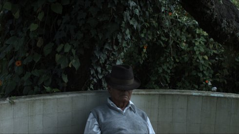

La muerte del maestro
The Death of the Master

José María Avilés
|
62 min – HD – Spanish B: José María Avilés, Felipe Troya – K: José María Avilés – S: José María Avilés, Sebastián Schjaer – P: Angamarca – V: Trapecio Cine – Mit Marcos Andrango , Wenceslao Tipán
|
saturday 13 oct 4.30 pm werkstattkino
On 16 April 2016 a severe earthquake hit coastal Ecuador. José María Avilés’ first longer film is based on this national disaster, but at great distance from the collapsed buildings and buried loved ones. He shows how an unexpected event can suddenly modify all the rules of the game, even in the remote town of Angamarca – the location of the film – where the effects of the quake arrive as distant echoes of hostility in the natural environment. (IFF Rotterdam 2018)
José María Avilés Filmmaker and editor José María AVILÉS (1988, Ecuador) graduated from Universidad del Cine in Buenos Aires, Argentina in 2012. After attending the Laboratoria de Cine of Martín Rejtman and Andrés di Tella in 2013, he made several short films and worked as an editor on Alba (2016), among other films. In 2017, he made his feature debut as a director with The Death of the Master.
|
| Films La muerte del maestro 2018
|